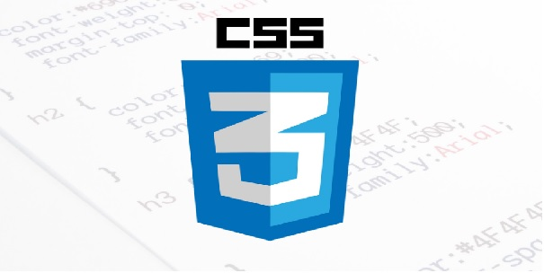
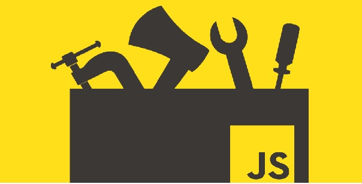

DOCKER - INSTALACION
Por: BRIAN HOGAN | Publicado el 5 de julio de 2018
Docker es una aplicación que simplifica el proceso de administración de procesos de aplicaciones en contenedores . Los contenedores le permiten ejecutar sus aplicaciones en procesos aislados de recursos. Son similares a las máquinas virtuales, pero los contenedores son más portátiles, más amigables con los recursos y más dependientes del sistema operativo del host.
Continuar leyendo
SERVIDOR DIGITAL OCEAN - CONFIGURACION INICIAL
Por: MITCHELL ANICAS | Publicado el 12 de diciembre de 2016
Cuando se crea un nuevo servidor de Ubuntu 16.04, hay algunos pasos de configuración que se deben tener desde el principio como parte de la configuración básica. Esto aumentará la seguridad y la usabilidad de su servidor y le dará una base sólida para las acciones posteriores.
Continuar leyendo
Test de HTML, CSS, JS
Publicado el Octubre 3, 2018
Test para conocer el conocimiento que el estudiante tiene sobre los diferentes Lenguajes de marcado.
HTML
Link para el Test
CSS

Link para el Test
JS

Link para el Test
FIGURA

Link para el Test